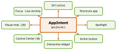

ios-platform · folio
In one line: App Intents (iOS 16+) exposes an app action to the system as
plain Swift: a struct conforming to AppIntent with @Parameters
and an async perform(). Write it once; Siri, Shortcuts,
Spotlight, the Action button, interactive widgets, Control Center and visual intelligence all run the
same type — no .intentdefinition file, usually no extension.
Download PDF Print view LaTeX source

How it works
AppIntent:static let title: LocalizedStringResource,@Parameter(title:)properties,func perform() async throws->some IntentResult. Results:.result(),.result(value:)(chains in Shortcuts),.result(dialog:)(Siri speaks),.result(view:)(snippet).- Parameter types: primitives,
Date,URL…;AppEnum(fixed cases +caseDisplayRepresentations) orAppEntity(dynamic domain objects). AppEntity:id,displayRepresentation,typeDisplayRepresentation,static var defaultQuery. ItsEntityQuery:entities(for: ids)(required — resolve saved ids),suggestedEntities()(picker),EntityStringQuery.entities(matching:)(spoken text). 26:@ComputedProperty(getter reads your model /UserDefaults— no stored copy),@DeferredProperty(get async throws: fetched only if the system asks).- Asking the user:
$room.requestValue(),requestDisambiguation,requestConfirmation. 26:requestConfirmation(actionName:snippetIntent:)shows a snippet;requestChoice(between:dialog:view:)withOption(title:style:)returns the pick or throws on cancel.ParameterSummary= the Shortcuts-editor sentence. AppShortcutsProvider:static var appShortcutsofAppShortcut(intent:phrases:…)— in Siri, Spotlight, Shortcuts on install, zero setup. Every phrase contains\(.applicationName); max 10; one entity/enum parameter per phrase —updateAppShortcutParameters()when its values change.- Where
perform()runs: background by default, app UI not loaded, about 30 s. 26static let supportedModes: IntentModes—.background,.foreground(.immediate / .dynamic / .deferred), combinable; in.dynamiccallcontinueInForeground(_:alwaysConfirm:).openAppWhenRunis deprecated in 26 (“providesupportedModes”). Widget buttons run in the widget extension;LiveActivityIntent/AudioPlaybackIntentin the app. 27allowedExecutionTargets(IntentExecutionTargets: main app, App Intents extension, WidgetKit extension) pins the process. - Dependencies:
@Dependency var store: Store, registered at launch withAppDependencyManager.shared.add { store }— not singletons reached fromperform(). - Special conformances:
WidgetConfigurationIntent(17),SetFocusFilterIntent,ControlConfigurationIntent(Control Center, 18),OpenIntent(opens an entity). 26UndoableIntent: itsundoManagerregisters undo for the in-app action.AppIntentsPackage(17, frameworks) now also for Swift packages + static libraries.
Example
struct ToggleLight: AppIntent {
static let title: LocalizedStringResource = "Toggle Light"
static let supportedModes: IntentModes = [.background, .foreground(.dynamic)]
@Parameter(title: "Room") var room: RoomEntity
@Dependency var lights: LightService
func perform() async throws -> some IntentResult & ProvidesDialog {
let on = try await lights.toggle(room.id) // modes: iOS 26
return .result(dialog: "\(room.name) is \(on ? "on" : "off")")
}
}
// iOS 26: ask mid-perform with a custom snippet view
let archive = Option(title: "Archive", style: .default)
let delete = Option(title: "Delete", style: .destructive)
let pick = try await requestChoice(between: [.cancel, archive, delete],
dialog: "Archive or delete \(album.name)?", view: AlbumCard(album))
struct RoomSnippet: SnippetIntent { // iOS 26
@Parameter var room: RoomEntity
func perform() async throws -> some IntentResult & ShowsSnippetView {
.result(view: RoomCard(room)) // Button(intent: ToggleLight())...
} // RoomSnippet.reload() on change
}Spotlight & donation (in brief)
NSUserActivity (isEligibleForSearch/Prediction, Handoff) · Core Spotlight CSSearchableItem + CSSearchableIndex · IndexedEntity (18) · donate (IntentDonationManager.shared.donate(intent:)) after in-app use — feeds suggestions, does not expose the action.
Which protocol when
| need | adopt |
|---|---|
| show / edit UI inline in Siri, Spotlight | SnippetIntent (26) |
| open the app on an entity | OpenIntent · supportedModes (26) |
| configure a widget / a control | WidgetConfigurationIntent · ControlConfigurationIntent |
| button in a Live Activity / audio | LiveActivityIntent · AudioPlaybackIntent |
| undo from the app’s UI | UndoableIntent (26) |
| be found by image search | IntentValueQuery (26) |
| clean up on cancel · work past 30 s | CancellableIntent (26.4) · LongRunningIntent (27) |
Write once, surface everywhere

“Toggle kitchen in Lumen”
New in iOS 26 · 26.4 · 27
- 26 Interactive snippets:
SnippetIntentreturnsShowsSnippetView; its buttons/toggles run other intents, then the system calls itsperform()again to redraw;reload()when your data changes. - 26 Visual intelligence: an
IntentValueQuerywithvalues(for input: SemanticContentDescriptor)(input.pixelBuffer) returns your entities for on-screen / camera image search;@UnionValueenum when results mix entity types. - 26.4
CancellableIntent:withIntentCancellationHandler(operation:onCancel:)gets a reason — no progress past the 30 s limit, or the person cancelled. - 27
LongRunningIntent(aProgressReportingIntent):performBackgroundTask { …}runs past 30 s if it keeps updatingprogress.EntityCollection<T>: a parameter of ids only (.identifiers,resolvedEntities()when needed).SyncableEntity: id stable across devices (SyncableEntityIdentifier(local:stable:)) so Siri can hand off. App Intents Testing framework (AnyAppIntent,ResolvedIntentResult,IntentDefinitions).
Traps
- Phrase without
\(.applicationName)— never matches. - UI from a background
perform()— declaresupportedModes(pre-26:openAppWhenRun, now deprecated). - “App Intents replaced SiriKit” — not all: messaging, VoIP calling, media, CarPlay still use
INIntent+ an Intents extension. - Assuming app state in
perform(); entities persist by id and re-resolve via the query. - Long work in
perform()with no progress — cancelled at ~30 s; report progress (LongRunningIntentin 27). - Expensive entity fields computed eagerly —
@DeferredProperty; copied state —@ComputedProperty.
Remember
“I-E-Q-S”: Intent does it, Entity names it, Query finds it, Shortcut says it — Modes say where it runs.
supportedModes (26) — when the app comes forward